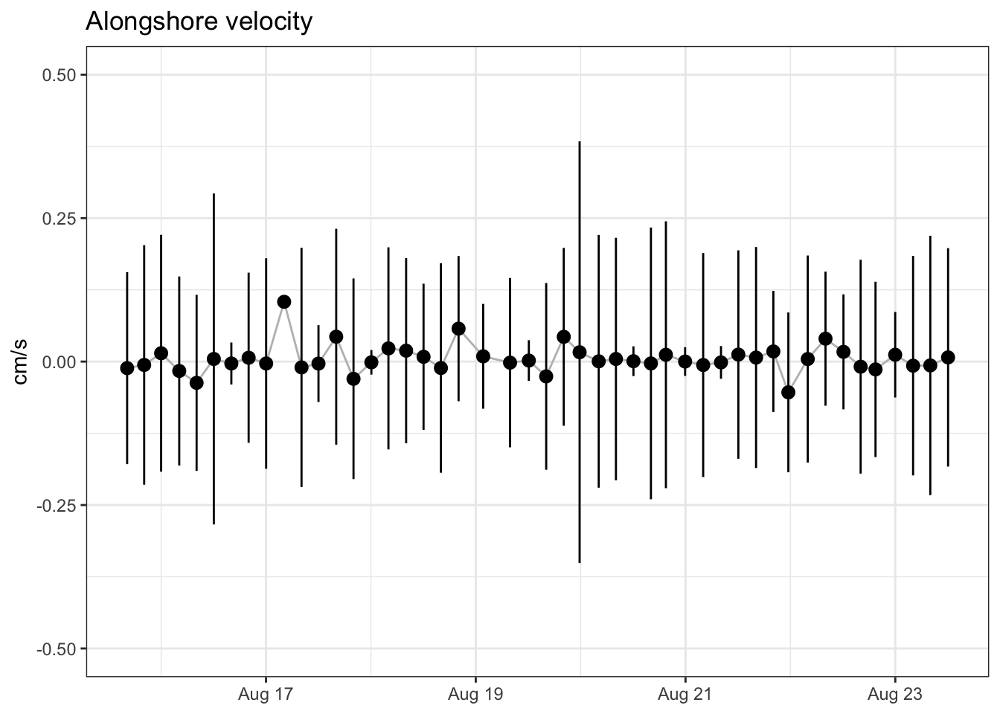
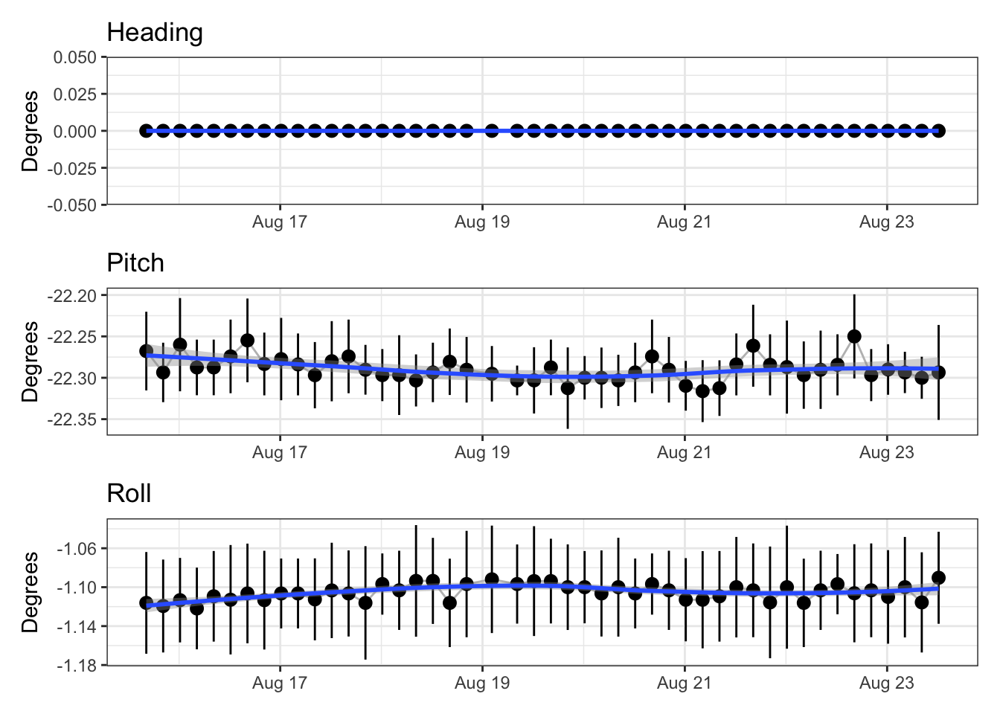

library(tidyverse)
library(lubridate)
library(mlabtools)
theme_set(theme_bw())
options(digits.secs=3)Parse LECS Web
Get and parse data sent to LECS website. Data from 2024-04-03 to present.
Time offset for first week of March deployment
time_offset = as.POSIXct("2024-03-06 08:42:43") - as.POSIXct("2019-01-01 00:00:00")Get Data
Get data from website.
Use start_date parameter to limit download.
df_raw <- lecs_read_web(start_date = params$start_date)Add row, type, send and line number
df <- lecs_add_metadata(df_raw)Separate data into post times, met, status, and adv data
post_times <- lecs_post_times(df) |>
mutate(timestamp = if_else(timestamp < as.POSIXct("2020-01-01"),
timestamp + time_offset,
timestamp))
met <- lecs_met_data(df) |>
mutate(timestamp = if_else(timestamp < as.POSIXct("2020-01-01"),
timestamp + time_offset,
timestamp))Warning: Expected 9 pieces. Additional pieces discarded in 12 rows [7, 8, 10, 17, 18,
20, 24, 25, 26, 28, 30, 45].status <- lecs_status_data(df) |>
mutate(timestamp = if_else(timestamp < as.POSIXct("2020-01-01"),
timestamp + time_offset,
timestamp))
adv_data <- lecs_adv_data(df, rinko_cals) |>
make_lecs_ts(status) |>
mutate(missing = lecs_missing(count, line))Filter bad data
status_qc <- status |>
filter(soundspeed > 1450,
adv_day < 32, adv_month > 0, adv_month < 13,
adv_min < 61, adv_hour < 24, adv_year < 100,
#timestamp > "2023-01-01",
timestamp < "2024-10-01")
adv_data_qc <- adv_data |>
filter(count >= 0, count < 256,
#ana_in2 == 1,
#timestamp > "2023-01-01",
timestamp < "2024-10-01")Calculate per-send means
met_mean <- met |>
group_by(send) |>
summarise(across(everything(),
list(mean = ~ mean(.x, na.rm = TRUE),
sd = ~ sd(.x, na.rm = TRUE))))
status_mean <- status_qc |>
select(send, timestamp, bat) |>
group_by(send) |>
summarise(across(c(timestamp, bat),
list(mean = ~ mean(.x, na.rm = TRUE),
sd = ~ sd(.x, na.rm = TRUE))))
adv_data_mean <- adv_data_qc |>
select(send, missing, timestamp,
pressure, temp,
u, v, w,
amp1, amp2, amp3,
corr1, corr2, corr3,
DO_percent, pH) |>
group_by(send) |>
summarise(across(everything(),
list(mean = ~ mean(.x, na.rm = TRUE),
sd = ~ sd(.x, na.rm = TRUE))),
missing_frac = sum(missing, na.rm = TRUE) / (sum(missing, na.rm = TRUE) + n()),
N = n())Last post was 2024-04-10 12:11:12
How many status lines are in the wrong year?
ct <- post_times |>
select(post_time = timestamp, send)
status |>
select(send, lander_time = timestamp) |>
inner_join(ct) |>
filter(lander_time > "2024-05-01") |>
ggplot(aes(post_time, lander_time)) +
geom_point() +
scale_x_datetime(date_labels = "%Y-%m-%d") +
ggtitle("Incorrect Lander timestamps")Joining with `by = join_by(send)`
Battery
status_mean |>
plot_mean(bat_mean, bat_sd) +
geom_smooth() +
labs(title = "Battery Voltage",
y = "Volts")`geom_smooth()` using method = 'loess' and formula = 'y ~ x'
PAR
met_mean |>
plot_mean(PAR_mean, PAR_sd)Warning: Removed 46 rows containing missing values or values outside the scale range
(`geom_segment()`).
Wind Speed
met_mean |>
plot_mean(wind_speed_mean, wind_speed_sd) +
labs(title = "Wind Speed",
y = "Wind Speed (m/s)")Warning: Removed 46 rows containing missing values or values outside the scale range
(`geom_segment()`).
Wind direction
ggplot(met_mean, aes(wind_dir_mean, wind_speed_mean)) +
geom_point() +
coord_polar() +
scale_x_continuous(limits = c(0,360),
breaks = seq(0, 360, by = 45),
minor_breaks = seq(0, 360, by = 15))
Pressure/Depth
adv_data_mean |>
plot_mean(pressure_mean, pressure_sd) +
scale_y_reverse() +
labs(title = "Pressure",
y = "Pressure (dbar)")
pH
adv_data_mean |>
plot_mean(pH_mean, pH_sd) +
labs(title = "pH")
Temperature
adv_data_mean |>
plot_mean(temp_mean, temp_sd) +
labs(title = "Temperature",
y = "Temp (C)")
Oxygen
adv_data_mean |>
plot_mean(DO_percent_mean, DO_percent_sd) +
labs(title = "Oxygen",
y = "Oxygen saturation (%)")
ADV Correlation
adv_data_mean |>
select(timestamp_mean, corr1_mean, corr2_mean, corr3_mean) |>
pivot_longer(starts_with("corr")) |>
ggplot(aes(timestamp_mean, value, color = name)) +
geom_smooth(aes(timestamp_mean, value), se = FALSE) +
geom_smooth(aes(timestamp_mean, value, color = NULL)) +
geom_point() +
labs(title = "ADV correlation",
x = NULL,
y = "Correlation (%)")`geom_smooth()` using method = 'loess' and formula = 'y ~ x'
`geom_smooth()` using method = 'loess' and formula = 'y ~ x'
ADV Amplitude
adv_data_mean |>
select(timestamp_mean, amp1_mean, amp2_mean, amp3_mean) |>
pivot_longer(starts_with("amp")) |>
ggplot(aes(timestamp_mean, value, color = name)) +
geom_smooth(aes(timestamp_mean, value), se = FALSE) +
geom_smooth(aes(timestamp_mean, value, color = NULL)) +
geom_point() +
labs(title = "ADV amplitude",
x = NULL,
y = "Amplitude")`geom_smooth()` using method = 'loess' and formula = 'y ~ x'
`geom_smooth()` using method = 'loess' and formula = 'y ~ x'
ADV Vertical Velocity
adv_data_mean |>
plot_mean(w_mean, w_sd) +
ylim(-0.1, 0.1) +
labs(title = "Vertical velocity",
y = "cm/s")Warning: Removed 11 rows containing missing values or values outside the scale range
(`geom_segment()`).
ADV Onshore Velocity
Positive is towards shore ADV set up with x axis towards shore as of 2024-03-07, unsure earlier
adv_data_mean |>
plot_mean(u_mean, u_sd) +
ylim(-0.5, 0.5) +
labs(title = "Onshore velocity",
y = "cm/s")Warning: Removed 2 rows containing missing values or values outside the scale range
(`geom_segment()`).
ADV Alongshore velocity
Positive is southerly current
adv_data_mean |>
plot_mean(v_mean, v_sd) +
ylim(-0.5, 0.5) +
labs(title = "Alongshore velocity",
y = "cm/s")Warning: Removed 3 rows containing missing values or values outside the scale range
(`geom_segment()`).
Missing data
Most missing data is in first 30 lines per send. This is the beginning of a new file. This is likely a gap as DAQ gets started again after pausing for send. The following plot is missing fraction without the first 25 lines of each send.
adv_missing <- adv_data |>
filter(count >= 0, count < 256,
line > 30) |>
#timestamp < "2024-10-01") |>
select(send, missing) |>
inner_join(post_times) |>
group_by(timestamp) |>
summarise(missing_frac = sum(missing, na.rm = TRUE) / (sum(missing, na.rm = TRUE) + n()),
N = n())Joining with `by = join_by(send)`adv_missing |>
ggplot(aes(timestamp, missing_frac)) +
geom_point() +
labs(title = "Fraction missing by send, without first 30 lines",
x = NULL,
y = "Fraction missing")
Post times
knitr::kable(post_times)| timestamp | send | row_count |
|---|---|---|
| 2024-04-02 20:11:12 | 1 | NA |
| 2024-04-03 00:11:12 | 2 | 501 |
| 2024-04-03 04:11:12 | 3 | 501 |
| 2024-04-03 08:11:12 | 4 | 501 |
| 2024-04-03 12:11:12 | 5 | 501 |
| 2024-04-03 16:11:12 | 6 | 501 |
| 2024-04-04 00:11:12 | 7 | 834 |
| 2024-04-04 04:11:12 | 8 | 501 |
| 2024-04-04 08:11:12 | 9 | 501 |
| 2024-04-04 12:11:12 | 10 | 501 |
| 2024-04-04 16:11:12 | 11 | 501 |
| 2024-04-04 20:11:12 | 12 | 501 |
| 2024-04-05 00:11:12 | 13 | 501 |
| 2024-04-05 04:11:12 | 14 | 501 |
| 2024-04-05 08:11:12 | 15 | 501 |
| 2024-04-05 12:11:12 | 16 | 256 |
| 2024-04-05 16:11:12 | 17 | 501 |
| 2024-04-05 20:11:12 | 18 | 501 |
| 2024-04-06 00:11:12 | 19 | 501 |
| 2024-04-06 04:11:12 | 20 | 501 |
| 2024-04-06 08:11:12 | 21 | 501 |
| 2024-04-06 12:11:12 | 22 | 501 |
| 2024-04-06 16:11:12 | 23 | 400 |
| 2024-04-06 20:11:12 | 24 | 501 |
| 2024-04-07 00:11:12 | 25 | 501 |
| 2024-04-07 04:11:12 | 26 | 501 |
| 2024-04-07 08:11:12 | 27 | 501 |
| 2024-04-07 12:11:12 | 28 | 501 |
| 2024-04-07 16:11:12 | 29 | 501 |
| 2024-04-07 20:11:12 | 30 | 501 |
| 2024-04-08 00:11:12 | 31 | 501 |
| 2024-04-08 04:11:12 | 32 | 501 |
| 2024-04-08 08:11:12 | 33 | 501 |
| 2024-04-08 12:11:12 | 34 | 501 |
| 2024-04-08 16:11:12 | 35 | 501 |
| 2024-04-08 20:11:12 | 36 | 501 |
| 2024-04-09 00:11:12 | 37 | 501 |
| 2024-04-09 04:11:12 | 38 | 501 |
| 2024-04-09 08:11:12 | 39 | 501 |
| 2024-04-09 12:11:12 | 40 | 501 |
| 2024-04-09 15:22:28 | 41 | 1889 |
| 2024-04-09 16:11:12 | 42 | 501 |
| 2024-04-09 20:11:12 | 43 | 501 |
| 2024-04-10 00:11:12 | 44 | 501 |
| 2024-04-10 04:11:12 | 45 | 501 |
| 2024-04-10 08:11:12 | 46 | 501 |
| 2024-04-10 12:11:12 | 47 | 501 |
Lines per post
post_times |>
ggplot(aes(timestamp, row_count)) +
geom_point() +
labs(title = "Lines per post",
x = NULL,
y = "Lines")Warning: Removed 1 row containing missing values or values outside the scale range
(`geom_point()`).